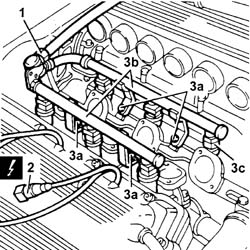

1056B62 FUEL PIPE ASSEMBLY, LEFT AND RIGHT, COMPLETE WITH INJECTORS - R.R.
- Path
- Procedures > 10 ENGINE > 1056 PETROL FUEL INJECTION SYSTEM > 1056B MULTI-POINT INJECTION SYSTEM (MPI) > 1056B62 FUEL PIPE ASSEMBLY, LEFT AND RIGHT, COMPLETE WITH INJECTORS - R.R.
- Kind
- repair procedure (removal / refitting; the operation number is the code)
- Applies to
- engines: 3.0 V6, 3.2 V6; all production periods
- Interactive page
- https://sloeber94.github.io/elrnDB-lThss/en/#/214207
Applies to: engines: 3.0 V6, 3.2 V6; all production periods
 Removing
Removing
 Refitting
RefittingSee in Op. 5530B10 BATTERY - R.R.
- Make sure that the ignition key is in the OFF position, then disconnect the negative battery terminal (-).
See in Op. 1072B42 INTAKE MANIFOLDS (all) - R.R. and Replace gasket
- Discharge the fuel supply pressure (see ASSY. 10 - WARNINGS).
1. Disconnect the fuel supply pipe from the fuel pipe assembly.
2. Disconnect the electrical connections from the injectors.
 | Description | Connector |
|---|---|---|
2 | Injector | N070A |
| Description | Connector |
|---|---|---|
2 | Injector | N070B |
| Description | Connector |
|---|---|---|
2 | Injector | N070C |
| Description | Connector |
|---|---|---|
2 | Injector | N070D |
| Description | Connector |
|---|---|---|
2 | Injector | N070E |
| Description | Connector |
|---|---|---|
2 | Injector | N070F |
3. Undo the bolts (3a) and remove the fuel pipe assembly (3b) complete with injectors (3c).

Applies to: engines: 3.0 V6, 3.2 V6; all production periods
Refitting
Removing- Fit the fuel pipe assembly, complete with injectors, and secure it using the bolts.
- Connect the electrical connections for the injectors.
| Description | Connector |
|---|---|---|
. | Injector | N070A |
| Description | Connector |
|---|---|---|
Injector | N070B |
| Description | Connector |
|---|---|---|
Injector | N070C |
| Description | Connector |
|---|---|---|
Injector | N070D |
| Description | Connector |
|---|---|---|
Injector | N070E |
| Description | Connector |
|---|---|---|
Injector | N070F |
- Connect the fuel supply pipe to the fuel pipe assembly.
See in Op. 1072B42 INTAKE MANIFOLDS (all) - R.R. and Replace gasket
- Connect the negative battery terminal (-).